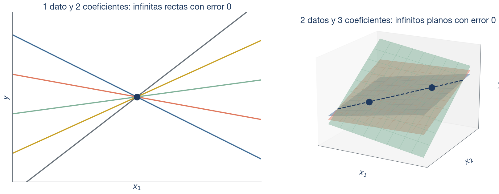
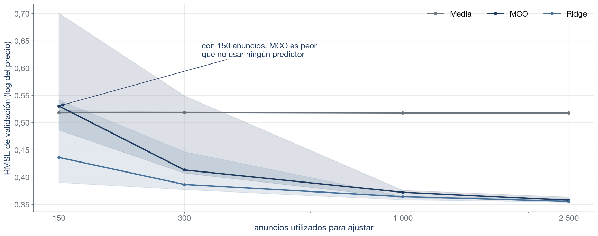
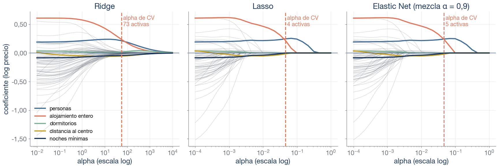
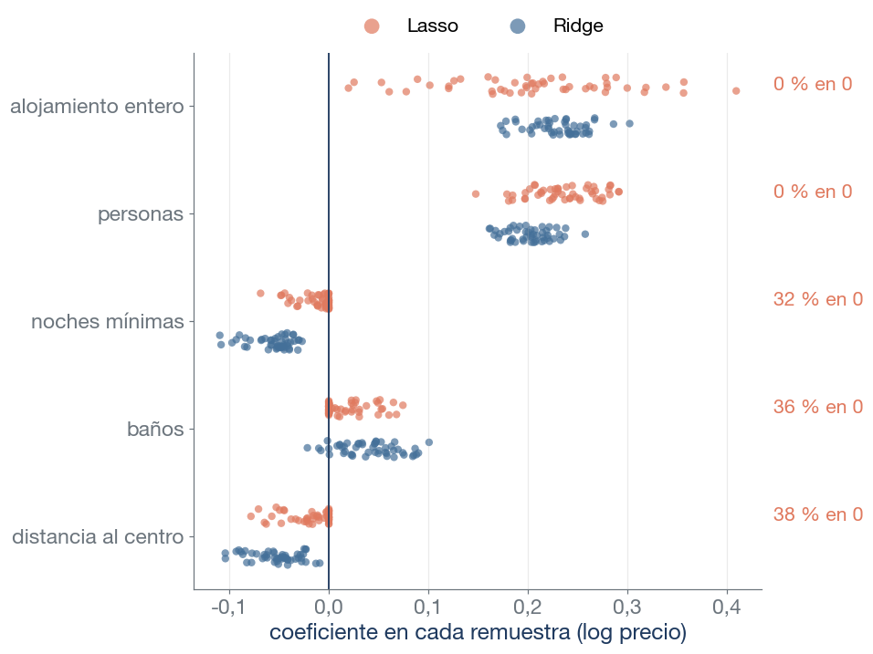

¿Qué familias (Ridge, Lasso, Elastic Net) pueden dejar coeficientes exactamente en cero?
Si la penalización de Ridge crece sin límite, ¿qué predice el modelo?
¿Por qué se estandarizan los predictores antes de penalizar?
En glmnet, ¿qué controla alpha y qué controla lambda?
Lasso y Elastic Net (con parte L1). Ridge contrae sin anular.
La media de \(y\) en entrenamiento: el intercepto no se penaliza.
Porque la penalización depende de las unidades: un coeficiente en km y otro en m no se pueden castigar por igual.
alpha es la mezcla L1/L2 y lambda la intensidad. En scikit-learn cambian los nombres: la intensidad es alpha y la mezcla, l1_ratio.
¿Cuál de estos tres modelos predecirá mejor los anuncios nuevos?
Tres modelos ajustados con los mismos 300 anuncios de Valencia predicen \(\log(\text{precio})\). El modelo C no usa ningún predictor.
Modelo
RMSE ajuste
Columnas
Modelo A
0,322
73
Modelo B
0,396
73
Modelo C
0,557
0
Ordenad A, B y C por su error en anuncios que el modelo no ha visto: la respuesta llega al final de la sesión.
Tres preguntas
¿Por qué puede fallar MCO? La varianza del estimador con colinealidad y con \(p+1>n\).
¿Qué cambian Ridge, Lasso y Elastic Net? Contraer frente a anular, las trayectorias de coeficientes y por cuál empezar.
¿Cómo elegimos la penalización y la familia? Validación cruzada en dos niveles, su incertidumbre y qué mide el test.
Los datos: 300 anuncios, 73 columnas
Información conocida al anunciar
Variables (columnas tras codificar)
Localización
Barrio (60 columnas, cada una frente al barrio más frecuente) y distancia al centro
Alojamiento
Tipo (entero frente a habitación), personas, dormitorios, camas, baños
Condiciones de la oferta
Noches mínimas, disponibilidad anual, superhost
Historial de reseñas
Total, en los últimos 12 meses, por mes y valoración media
Muchas columnas para 300 datos: 28 de los 61 barrios de la muestra tienen uno o dos anuncios, y MCO estima su coeficiente solo con ellos.
Columnas correlacionadas: personas, camas y dormitorios.
Fuente: Inside Airbnb, Valencia (listados.csv, datos del curso). 7606 anuncios con precio entre 30 y 400 €/noche (alojamientos enteros y habitaciones); 2282 reservados como test y 300 extraídos del resto para ajustar. Respuesta: \(\log(\text{precio})\).
¿Por qué puede fallar MCO?
MCO es insesgado, pero su varianza crece con la colinealidad
Con los supuestos del modelo lineal, \(\operatorname{Var}(\hat\beta \mid X)=\sigma^2 (X'X)^{-1}\). Para un coeficiente concreto,
\(R_j^2\): cuánto explican los demás predictores a \(j\). Con \(R_j^2 = 0{,}9\), la varianza se multiplica por 10.
\(\sum_i (x_{ij}-\bar x_j)^2 = n \,s_j^2\): crece con \(n\) y con la dispersión de \(x_j\).
Qué cambia Ridge
Si \(x_1\) y \(x_2\) son casi idénticos, muchas combinaciones \((\beta_1, \beta_2)\), generan prácticamente las mismas predicciones. Ridge favorece las que reparten el efecto entre ambas variables y evitan coeficientes grandes de signo opuesto.
Con más coeficientes que datos tenemos infinitas soluciones
Código: con p + 1 > n, infinitas rectas y planos con error de ajuste nulo
fig = plt.figure(figsize=(16, 6.5))ax = fig.add_subplot(1, 2, 1)x0, y0 =2.0, 3.0xs = np.linspace(0, 4, 50)for b1, color inzip([-1.1, -0.4, 0.3, 1.0, 1.7], [tv.BLUE, tv.TERRACOTTA, tv.SAGE, tv.GOLD, tv.GRAY]): ax.plot(xs, y0 + b1 * (xs - x0), color=color, lw=2.5)ax.scatter([x0], [y0], s=170, color=tv.NAVY, zorder=5)ax.set(xlim=(0, 4), ylim=(0, 6), xlabel="$x_1$", ylabel="$y$", title="1 dato y 2 coeficientes: infinitas rectas con error 0")ax.set_xticks([])ax.set_yticks([])ax3 = fig.add_subplot(1, 2, 2, projection="3d", computed_zorder=False)P = np.array([[1.0, 1.0, 2.0], [3.0, 2.0, 4.0]]) # dos datos (x1, x2, y)g1, g2 = np.meshgrid(np.linspace(0, 4, 9), np.linspace(0, 3, 9))for t, color inzip([0.6, 1.8, 3.2], [tv.BLUE, tv.TERRACOTTA, tv.SAGE]): b0 = b1 =1- t /2# plano y = b0 + b1·x1 + t·x2 que pasa por los dos datos ax3.plot_surface(g1, g2, b0 + b1 * g1 + t * g2, color=color, alpha=0.5, edgecolor=color, linewidth=0.4, shade=False, zorder=1)d = P[1] - P[0]seg = np.array([P[0] -0.5* d, P[1] +0.5* d])ax3.plot(seg[:, 0], seg[:, 1], seg[:, 2], color=tv.NAVY, lw=2, ls="--", zorder=9)ax3.scatter(P[:, 0], P[:, 1], P[:, 2], s=170, color=tv.NAVY, depthshade=False, zorder=10)ax3.set(xlabel="$x_1$", ylabel="$x_2$", zlabel="$y$")ax3.set_title("2 datos y 3 coeficientes: infinitos planos con error 0", y=1.0)ax3.set_xticks([])ax3.set_yticks([])ax3.set_zticks([])ax3.view_init(elev=18, azim=-62)ax3.set_box_aspect(None, zoom=1.1)fig.subplots_adjust(left=0.03, right=0.97, wspace=0.05)plt.show()

Si \(p+1>n\), \((X'X)^{-1}\) no existe (MCO genera infinitas soluciones). Dos problemas, un síntoma (varianza) y una misma solución: regularizar.
Sesgo y varianza
Código: simulación con beta conocido, 100 réplicas de MCO y Ridge
MCO es insesgado; Ridge introduce sesgo, pero reduce la variabilidad. Ridge queda por debajo del valor verdadero (media 0,74 cuando \(\beta_1=\beta_2 = 1\)) a cambio de mucha menos varianza.
¿Cuándo deja de ser útil regularizar?
Código: error de validación de MCO, Ridge y la media según el tamaño de entrenamiento
fig, ax = plt.subplots(figsize=(16, 6.5))for name in ["Media", "MCO", "Ridge"]: s = learning.loc[learning.Modelo.eq(name)].groupby("n").RMSE.agg(["median", "min", "max"]) ax.plot(s.index, s["median"], "o-", color=colors[name], lw=2.5, label=name) ax.fill_between(s.index, s["min"], s["max"], color=colors[name], alpha=0.15)ax.set_xscale("log")ax.set_xticks([150, 300, 1000, 2500], ["150", "300", "1 000", "2 500"])ax.set(xlabel="anuncios utilizados para ajustar", ylabel="RMSE de validación (log del precio)")n150 = curva.xs(150, level="n")texto_150 = ("con 150 anuncios, MCO es peor\nque no usar ningún predictor"if n150["MCO"] > n150["Media"]else"con 150 anuncios, MCO apenas\nmejora a no usar ningún predictor")ax.annotate(texto_150, xy=(150, n150["MCO"]), xytext=(330, n150["MCO"] +0.09), fontsize=15, color=tv.NAVY, arrowprops=dict(arrowstyle="-|>", color=tv.NAVY))eje_coma(ax.yaxis, 2)ax.legend(frameon=False, loc="upper right", ncols=3)fig.tight_layout()plt.show()

Mediana y rango de cinco submuestras; \(\lambda\) de Ridge elegida por validación en cada una. A mayor \(n\), menor ventaja de Ridge.
Regularizar es restringir la complejidad
Elegir un modelo predictivo exige dos decisiones:
La clase de funciones: lineal, árbol, red neuronal…
Cuánta complejidad introducimos en la clase elegida: el grado del polinomio, la profundidad del árbol o, en el modelo lineal, la penalización \(\lambda\).
Regularizar es la segunda: el modelo sigue siendo lineal, pero al crecer \(\lambda\) se estrecha el conjunto de coeficientes que puede alcanzar.
El grado era un control discreto; \(\lambda\) es continuo. Más \(\lambda\), menos complejidad (más sesgo y menos varianza): la relación en forma de U entre sesgo y varianza (ver semana 1) se lee ahora de derecha a izquierda.
\(\lambda \ge 0\) fija la intensidad y \(\alpha \in [0, 1]\), la mezcla. En scikit-learn, \(\lambda\) se llama alpha (con una escala distinta en cada estimador) y \(\alpha\), l1_ratio.
El intercepto no se penaliza.
La penalización depende de las unidades: los predictores se estandarizan (con los datos de entrenamiento).
Con \(\lambda\) pequeño, ¿cuál de las dos fórmulas puede anular un coeficiente? ¿Y qué le pasa a un coeficiente grande en cada una?
Solo Lasso: anula todo coeficiente MCO menor que \(\lambda/2\) en valor absoluto, por pequeña que sea \(\lambda\). A un coeficiente grande, Ridge le quita una proporción fija y Lasso una cantidad fija.
Geometría de la penalización
Código: geometría de Ridge y Lasso con dos predictores reales, misma elipse de error
Contornos del RSS con dos predictores estandarizados de los 300 anuncios. La solución es el primer contacto entre la elipse y la región; en el rombo, a menudo una esquina: un coeficiente nulo.
Ridge encoge; Lasso anula
Código: trayectorias de coeficientes de las tres familias (alpha de scikit-learn en cada panel)
destacar = ["num__accommodates", "cat__room_type_Entire home/apt", "num__bedrooms", "num__dist_km", "num__minimum_nights"]paleta = [tv.BLUE, tv.TERRACOTTA, tv.SAGE, tv.GOLD, tv.NAVY]idx = {f: i for i, f inenumerate(feature_names)}fig, axes = plt.subplots(1, 3, figsize=(16, 5.6), sharey=True)for ax, name inzip(axes, ["Ridge", "Lasso", "Elastic Net"]): a, P = path_grid[name], paths[name]for j inrange(P.shape[1]): ax.plot(a, P[:, j], color=tv.GRAY, lw=0.7, alpha=0.35)for f, color inzip(destacar, paleta): ax.plot(a, P[:, idx[f]], color=color, lw=2.6, label=etiquetas[f]) ax.axvline(alpha_cv[name], color=tv.TERRACOTTA, lw=2, ls="--") ax.text(alpha_cv[name], 0.97, f" alpha de CV\n{int(results.loc[name, 'Coef. activos'])} activas", transform=ax.get_xaxis_transform(), fontsize=13, color=tv.TERRACOTTA, va="top") ax.axhline(0, color=tv.NAVY, lw=0.8) ax.set_xscale("log") ax.set_title(name + (f" (mezcla α = {es(mix_cv, 1)})"if name =="Elastic Net"else"")) eje_coma(ax.yaxis, 2) ax.set_xlabel("alpha (escala log)")axes[0].set_ylabel("coeficiente (log precio)")axes[0].legend(frameon=False, fontsize=12, loc="lower left")fig.tight_layout()plt.show()

73 columnas; en gris, el resto (sobre todo barrios). Con el alpha de validación, Ridge conserva las 73; Lasso, 4, y Elastic Net, 5.
Lasso selecciona variables
Código: coeficientes de Lasso y Ridge en 50 remuestras bootstrap
vars_sel = ["cat__room_type_Entire home/apt", "num__accommodates", "num__minimum_nights", "num__bathrooms", "num__dist_km"]jit = np.random.default_rng(0)fig, ax = plt.subplots(figsize=(9, 6.8))for k, v inenumerate(vars_sel):for desplaza, name, color in [(-0.19, "Lasso", tv.TERRACOTTA), (0.19, "Ridge", tv.BLUE)]: c = boot.xs(name)[v].to_numpy() ax.scatter(c, k + desplaza + jit.uniform(-0.08, 0.08, len(c)), s=30, color=color, alpha=0.7, edgecolor="none", label=name if k ==0elseNone) ceros =1- frec_lasso[v] ax.text(1.02, k -0.19, f"{es(100* ceros)} % en 0", transform=ax.get_yaxis_transform(), ha="left", va="center", fontsize=14, color=tv.TERRACOTTA)ax.axvline(0, color=tv.NAVY, lw=1.2)ax.set_yticks(range(len(vars_sel)), [etiquetas[v] for v in vars_sel])ax.invert_yaxis()ax.set_xlabel("coeficiente en cada remuestra (log precio)")eje_coma(ax.xaxis, 1)ax.grid(axis="y", visible=False)ax.legend(frameon=False, loc="lower center", bbox_to_anchor=(0.5, 1.0), ncols=2, fontsize=14, markerscale=2)fig.tight_layout()plt.show()

Lasso deja coeficientes exactamente en cero: conserva unas 5 variables por remuestra.
Ridge no: contrae todos los coeficientes, pero ninguno llega a cero.
Un cero de Lasso no significa «sin relación» ni «sin efecto causal» (tema 7).
50 remuestras bootstrap de los 300 anuncios, cada modelo con su alpha de validación. La lista de Lasso cambia con la muestra: 12 variables distintas; solo alojamiento entero y personas en todas.
¿Con qué familia empezar?
Familia
Penalización
Ceros exactos
Suele convenir cuando…
Ridge
Cuadrados (L2)
No
Muchos efectos pequeños; predictores muy correlacionados; se quiere estabilidad, no selección
Lasso
Valores absolutos (L1)
Sí
Pocos efectos grandes entre muchas columnas; se quiere una lista corta
Elastic Net
Mezcla L1 y L2
Sí, si \(\alpha>0\)
Grupos de predictores correlacionados; \(p>n\); se quiere seleccionar sin perder grupos
El criterio ordena las candidatas; la validación decide. Y la calidad de la decisión depende de la señal y de \(n\).
¿Cómo elegimos la penalización y la familia?
Elegir en dos niveles
Ajuste: estimar \(\beta\) con entrenamiento; el preprocesado se realiza en cada partición.
Selección por validación cruzada (5 particiones de los 300 anuncios): dentro de cada familia, la mejor \(\lambda\) (y \(\alpha\)); entre familias, la de menor error medio.
Test: 2282 anuncios reservados desde el principio; se usan una vez, con la decisión tomada.
Selección por validación
Código: curvas de validación con error típico entre particiones
ref_cv = {"MCO": results.loc["MCO", "RMSE CV"], "media": results.loc["Media", "RMSE CV"]}curvas = {n: np.sqrt(-searches[n].cv_results_["mean_test_score"]) for n in ["Ridge", "Lasso", "Elastic Net"]}y_lim = (min(v.min() for v in curvas.values()) -0.03, max(ref_cv.values()) +0.03) # límites a partir de los datosfig, axes = plt.subplots(1, 3, figsize=(16, 5.8), sharey=True)for ax, name inzip(axes, ["Ridge", "Lasso", "Elastic Net"]): fr = pd.DataFrame(searches[name].cv_results_) fr = fr.assign(a=fr.param_model__alpha.astype(float))if name !="Elastic Net": sub = [(fr, colors[name], None)]else: sub = [(fr.loc[fr.param_model__l1_ratio.eq(r)], c, f"mezcla α = {es(r, 1)}")for r, c inzip([.1, .5, .9], [tv.BLUE, tv.SAGE, tv.TERRACOTTA])]for frame, color, label in sub: rmse = np.sqrt(-frame.mean_test_score) ee = [ee_cv(searches[name], k) for k in frame.index] # misma función que la tabla de la slide 22 ax.errorbar(frame.a, rmse, yerr=ee, fmt="o-", ms=4, color=color, lw=2, capsize=2, label=label) ax.scatter([alpha_cv[name]], [results.loc[name, "RMSE CV"]], s=160, color=tv.TERRACOTTA, zorder=5) ax.axhline(ref_cv["MCO"], color=tv.NAVY, ls="--", lw=1.5) ax.axhline(ref_cv["media"], color=tv.GRAY, ls=":", lw=1.5) ax.set_xscale("log") ax.set(title=name, xlabel="alpha (escala log)", ylim=y_lim) eje_coma(ax.yaxis, 2)axes[2].legend(frameon=False, fontsize=13, loc="center left", bbox_to_anchor=(1.0, 0.3))axes[0].set_ylabel("RMSE de validación (log precio)")for etiqueta, color in [("MCO", tv.NAVY), ("media", tv.GRAY)]: # x en coordenadas del eje: no depende de los datos axes[2].text(1.02, ref_cv[etiqueta], etiqueta, transform=axes[2].get_yaxis_transform(), color=color, fontsize=14, va="center")fig.tight_layout()plt.show()
Regla fijada de antemano: menor error de validación. Seleccionado: Elastic Net, por menos de una milésima.
Orden en test: B (Ridge) < A (MCO) < C (Media).
MCO explica el 67 % de la varianza en ajuste y el 35 % en test: varianza.
Seleccionado por validación (Elastic Net): error de test 0,403. El test no reabre la selección.
Recapitulación: tres respuestas
¿Por qué puede fallar MCO? Su varianza crece con la colinealidad y con \(p/n\); con \(p+1>n\) ni siquiera es única.
¿Qué cambian Ridge, Lasso y Elastic Net? Ridge divide; Lasso resta y trunca (y así selecciona variables); Elastic Net mezcla ambas.
¿Cómo elegimos? En dos niveles con validación cruzada. El conjunto de prueba (test) se mantiene independiente de las decisiones (se usa una vez, al final).
Lo que no afirmamos: que regularizar mejore siempre (con datos de sobra apenas cambia nada), ni que un cero de Lasso signifique «sin relación».
Actividad final
300 anuncios y 73 columnas (barrios incluidos); personas, camas y dormitorios muy correlacionados.
El área de negocio quiere buenas predicciones y una lista corta de variables asociadas estadísticamente con el precio.
En parejas, dos frases por decisión:
¿Qué familias y qué rejillas probaríais?
¿Qué haríais antes de ajustar?
¿Qué advertencia pondríais a la lista de variables?